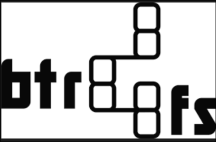
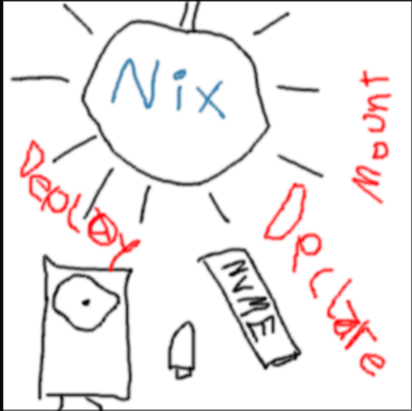

Minimal BTRFS-Subvol Install with Disko and Flakes
✔️ Click to Expand Table of Contents
Figure 1: BTRFS Logo: Image of the BTRFS logo. Sourced from the BTRFS repo 
Why I Chose BTRFS
I chose BTRFS because I was already familiar with it from using it with Arch Linux and I found it to be very easy to use. From what I've read, there are licensing issues between the Linux Kernel and ZFS which means that ZFS is not part of the Linux Kernel; it's maintained by the OpenZFS project and available as a separate kernel module. This can cause issues and make you think more about your filesystem than I personally want to at this point.
While ZFS is a solid choice and offers some benefits over BTRFS, I recommend looking into it before making your own decision.
If you have a ton of RAM you could most likely skip the minimal install and just set your system up as needed or just use tmpfs as root
Getting Started with Disko
Disko allows you to declaratively partition and format your disks, and then mount them to your system. I recommend checking out the README as it is a disk destroyer if used incorrectly.
We will mainly be following the disko quickstart guide
Figure 2: Disko Logo: Image of the logo for Disko, the NixOS declarative disk partitioning tool. Sourced from the Disko project 
-
Get the Nixos Minimal ISO Get it on a usb stick, I use Ventoy with Ventoy2Disk.sh. The following is the link to the Ventoy TarBall download, untar it with
tar -xzf ventoy-1.1.05-linux.tar.gz, and make it executable withchmod +x Ventoy2Disk.sh, and finally execute it withsudo bash Ventoy2Disk.shFollow the prompts to finish the install. -
The minimal installer uses
wpa_supplicantinstead of NetworkManager, to enable networking run the following:
sudo systemctl start wpa_supplicant
wpa_cli
> add_network
0
> set_network 0 ssid "myhomenetwork"
OK
> set_network 0 psk "mypassword"
OK
> enable_network 0
OK
To exit type quit, then check your connection with ping google.com.
Another option is to do the following, so either the above method or the below
method after starting wpa_supplicant:
# Alternative for quick setup (less interactive, but often faster)
sudo wpa_passphrase "myhomenetwork" "mypassword" >> /etc/wpa_supplicant/wpa_supplicant-wlan0.conf
sudo systemctl restart wpa_supplicant@wlan0.service
- Get your Disk Name with
lsblk
The output should be something like:
NAME MAJ:MIN RM SIZE RO TYPE MOUNTPOINTS
nvme0n1 259:0 0 1,8T 0 disk
- Copy the disk configuration to your machine. You can choose one from the examples directory. I chose the btrfs-subvolumes layout so I ran the following:
cd /tmp
curl https://raw.githubusercontent.com/nix-community/disko/refs/heads/master/example/btrfs-subvolumes.nix -o /tmp/disk-config.nix
- Make Necessary changes, I set mine up for impermanence with the following:
nano /tmp/disk-config.nix
{
disko.devices = {
disk = {
main = {
type = "disk";
device = "/dev/nvme0n1";
content = {
type = "gpt";
partitions = {
ESP = {
priority = 1;
name = "ESP";
start = "1M";
end = "512M";
type = "EF00";
content = {
type = "filesystem";
format = "vfat";
mountpoint = "/boot";
mountOptions = ["umask=0077"];
};
};
root = {
size = "100%";
content = {
type = "btrfs";
extraArgs = ["-f"]; # Override existing partition
# Subvolumes must set a mountpoint in order to be mounted,
# unless their parent is mounted
subvolumes = {
# Subvolume name is different from mountpoint
"/root" = {
mountpoint = "/";
mountOptions = ["subvol=root" "compress=zstd" "noatime"];
};
# Subvolume name is the same as the mountpoint
"/home" = {
mountOptions = ["subvol=home" "compress=zstd" "noatime"];
mountpoint = "/home";
};
# Sub(sub)volume doesn't need a mountpoint as its parent is mounted
"/home/user" = {};
# Parent is not mounted so the mountpoint must be set
"/nix" = {
mountOptions = [
"subvol=nix"
"compress=zstd"
"noatime"
];
mountpoint = "/nix";
};
"/persist" = {
mountpoint = "/persist";
mountOptions = ["subvol=persist" "compress=zstd" "noatime"];
};
"/log" = {
mountpoint = "/var/log";
mountOptions = ["subvol=log" "compress=zstd" "noatime"];
};
"/lib" = {
mountpoint = "/var/lib";
mountOptions = ["subvol=lib" "compress=zstd" "noatime"];
};
# This subvolume will be created but not mounted
"/test" = {};
};
};
};
};
};
};
};
};
fileSystems."/persist".neededForBoot = true;
fileSystems."/var/log".neededForBoot = true;
fileSystems."/var/lib".neededForBoot = true;
}
❗ NOTE: While
"/persist"is perfectly functional and valid,"/nix/persist"(or often/var/lib/impermanencewith tools likeimpermanence) has emerged as a very common and somewhat "standard" location in the NixOS community for the persistent data. If you choose to go for"/nix/persist"here, make sure to matchenvironment.persistence."/nix/persist" = {in yourimpermanence.nix
- You may also choose to add a swapfile to the above
disk-config.nix, I haven't included it here because I manage it with the impermanence module. If you were to add it here you could just add under say the"/lib"section add:
# Persistent subvolume for swapfile
"/persist/swap" = {
mountpoint = "/persist/swap";
mountOptions = ["subvol=persist/swap" "noatime"]; # No compression for swap
};
fileSystems."/persist/swap".neededForBoot = true;
- Run disko to partition, format and mount your disks. Warning this will wipe EVERYTHING on your disk. Disko doesn't work with dual boot.
sudo nix --experimental-features "nix-command flakes" run github:nix-community/disko/latest -- --mode destroy,format,mount /tmp/disk-config.nix
Check it with the following:
mount | grep /mnt
The output for an nvme0n1 disk would be similar to the following:
#... snip ...
/dev/nvme0n1p2 on /mnt type btrfs (rw,noatime,compress=zstd:3,ssd,discard=async,space_cache=v2,subvolid=285,subvol=/root)
/dev/nvme0n1p2 on /mnt/persist type btrfs (rw,noatime,compress=zstd:3,ssd,discard=async,space_cache=v2,subvolid=261,subvol=/persist)
/dev/nvme0n1p2 on /mnt/etc type btrfs (rw,noatime,compress=zstd:3,ssd,discard=async,space_cache=v2,subvolid=261,subvol=/persist)
/dev/nvme0n1p2 on /mnt/nix type btrfs (rw,noatime,compress=zstd:3,ssd,discard=async,space_cache=v2,subvolid=260,subvol=/nix)
/dev/nvme0n1p2 on /mnt/var/lib type btrfs (rw,noatime,compress=zstd:3,ssd,discard=async,space_cache=v2,subvolid=258,subvol=/lib)
/dev/nvme0n1p2 on /mnt/var/log type btrfs (rw,noatime,compress=zstd:3,ssd,discard=async,space_cache=v2,subvolid=259,subvol=/log)
/dev/nvme0n1p2 on /mnt/nix/store type btrfs (ro,noatime,compress=zstd:3,ssd,discard=async,space_cache=v2,subvolid=260,subvol=/nix)
# ... snip ...
- Generate necessary files, here we use
--no-filesystemsbecause disko handles thefileSystemsattribute for us.
nixos-generate-config --no-filesystems --root /mnt
sudo mv /tmp/disk-config.nix /mnt/etc/nixos
Setting a Flake for your minimal Install
- Create the flake in your home directory, then move it to
/mnt/etc/nixos
mkdir flake && cd flake
nix-shell -p git yazi helix
export NIX_CONFIG='experimental-features = nix-command flakes'
export EDITOR='hx'
hx flake.nix
You'll change
hostname = nixpkgs.lib.nixosSystemto your chosen hostname, (e.g.magic = nixpkgs.lib.nixosSystem). This will be the same as yournetworking.hostName = "magic";in yourconfiguration.nixthat we will set up shortly.
# flake.nix
{
description = "NixOS configuration";
inputs = {
nixpkgs.url = "github:nixos/nixpkgs/nixos-unstable";
disko.url = "github:nix-community/disko/latest";
disko.inputs.nixpkgs.follows = "nixpkgs";
# impermanence.url = "github:nix-community/impermanence";
};
outputs = inputs@{ nixpkgs, ... }: {
nixosConfigurations = {
hostname = nixpkgs.lib.nixosSystem {
system = "x86_64-linux";
modules = [
./configuration.nix
inputs.disko.nixosModules.disko
# inputs.impermanence.nixosModules.impermanence
];
};
};
};
}
Move all the files into your flake:
cd /mnt/etc/nixos/
sudo mv disk-config.nix hardware-configuration.nix configuration.nix ~/flake
- Edit
configuration.nixwith what is required, the following is required, I clone my original flake repo and move the pieces into place but it's fairly easy to just type it all out:
-
Bootloader
-
User, the example uses
usernamechange this to your chosen username. If you don't set your hostname it will benixos. -
Networking
-
hardware-configuration.nix&disk-config.nixfor this setup -
initialHashedPassword: Runmkpasswd -m SHA-512 -s, then enter your desired password. Example output,
Password: your_secret_password
Retype password: your_secret_password
$6$random_salt$your_hashed_password_string_here_this_is_very_long_and_complex
copy the hashed password and use it for the value of your
initialHashedPassword
# configuration.nix
{
config,
lib,
pkgs,
inputs,
...
}: {
imports = [
# Include the results of the hardware scan.
./hardware-configuration.nix
./disk-config.nix
];
networking.hostName = "magic"; # This will match the `hostname` of your flake
networking.networkmanager.enable = true;
boot.loader.systemd-boot.enable = true; # (for UEFI systems only)
# List packages installed in system profile.
# You can use https://search.nixos.org/ to find more packages (and options).
environment.systemPackages = with pkgs; [
vim # Do not forget to add an editor to edit configuration.nix! The Nano editor is also installed by default.
# wget
git
];
time.timeZone = "America/New_York";
users.users.nixos = {
isNormalUser = true;
extraGroups = [ "wheel" "networkmanager" ]; # Add "wheel" for sudo access
initialHashedPassword = "COPY_YOUR_MKPASSWD_OUTPUT_HERE"; # <-- This is where it goes!
# home = "/home/nixos"; # Optional: Disko typically handles home subvolumes
};
console.keyMap = "us";
nixpkgs.config.allowUnfree = true;
system.stateVersion = "25.05";
}
- Move the flake to
/mnt/etc/nixosand runnixos-install:
sudo mv ~/flake /mnt/etc/nixos/
sudo nixos-install --flake /mnt/etc/nixos/flake .#hostname
-
You will be prompted to enter a new password if everything succeeds.
-
If everything checks out, reboot the system and you should be prompted to enter your
userandpasswordto login to a shell to get started. -
The flake will be placed at
/etc/nixos/flake, I choose to move it to my home directory. Since the file was first in/etcyou'll need to adjust the permissions with something likesudo chown username:users ~/flake(usernamewill be your username) and then you can work on it without privilege escalation. -
To continue following along and set up impermanence Click Here